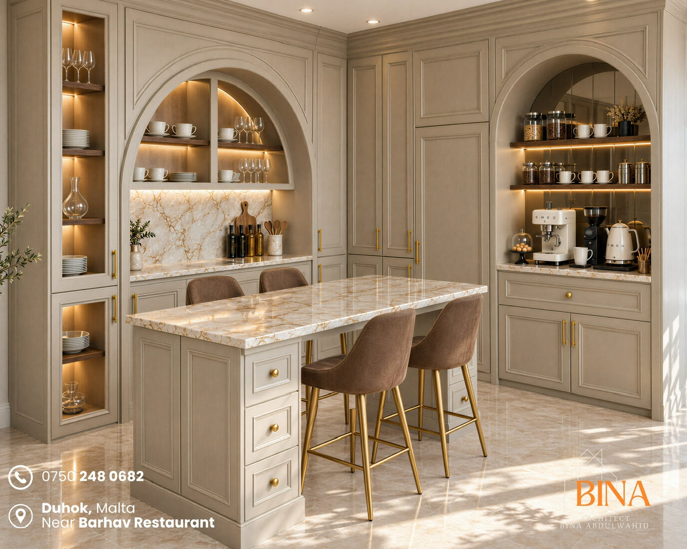
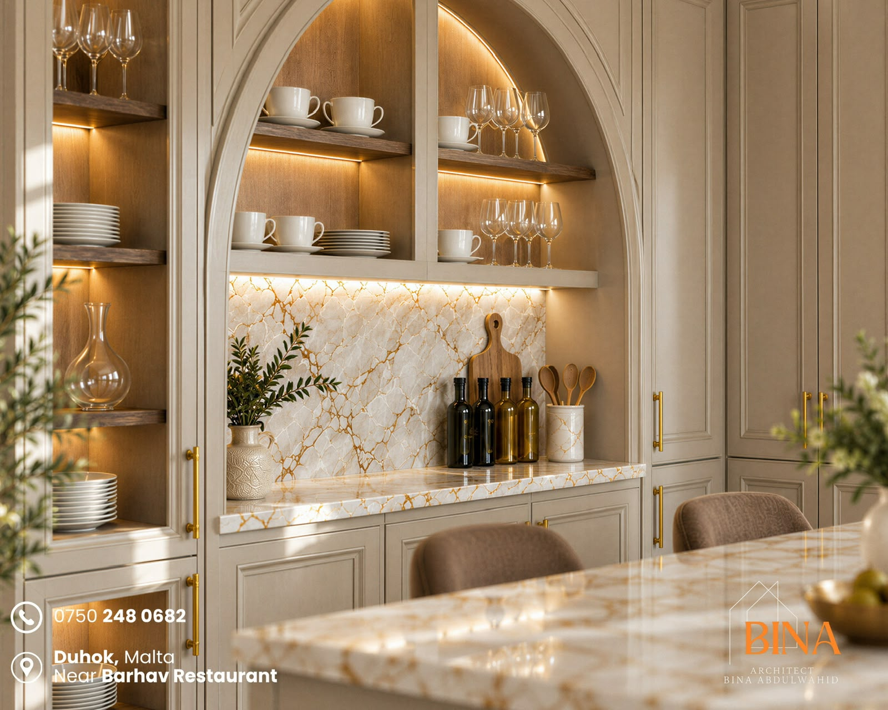
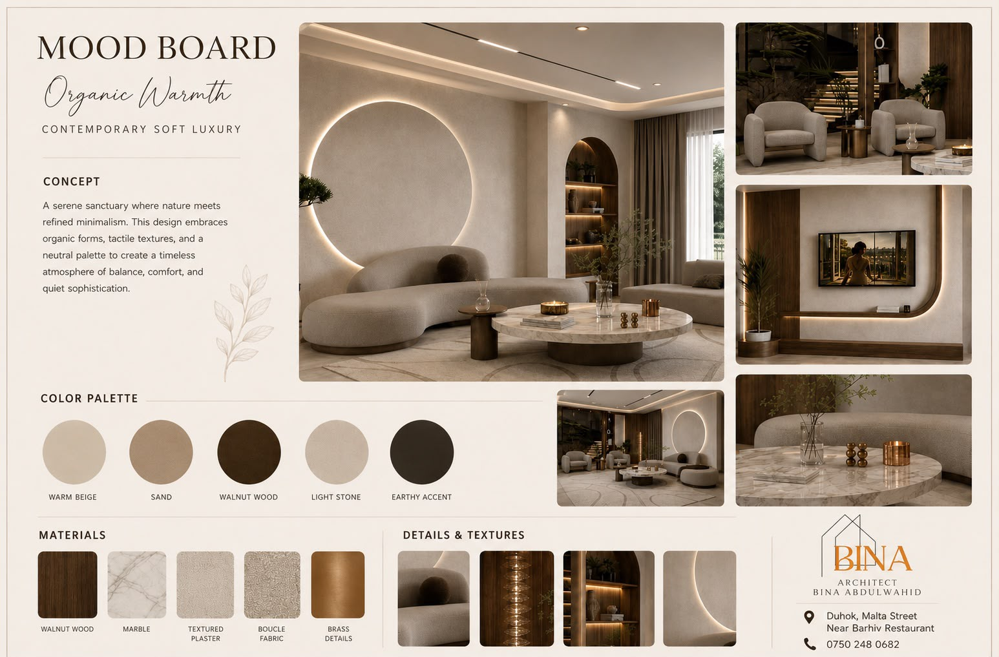
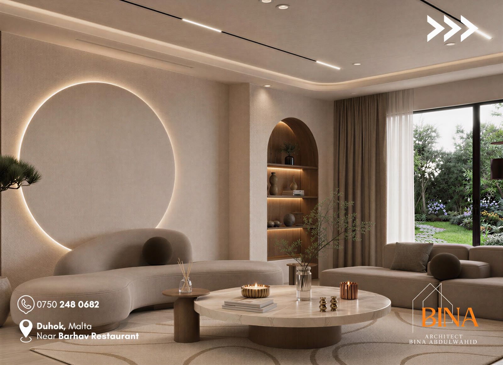
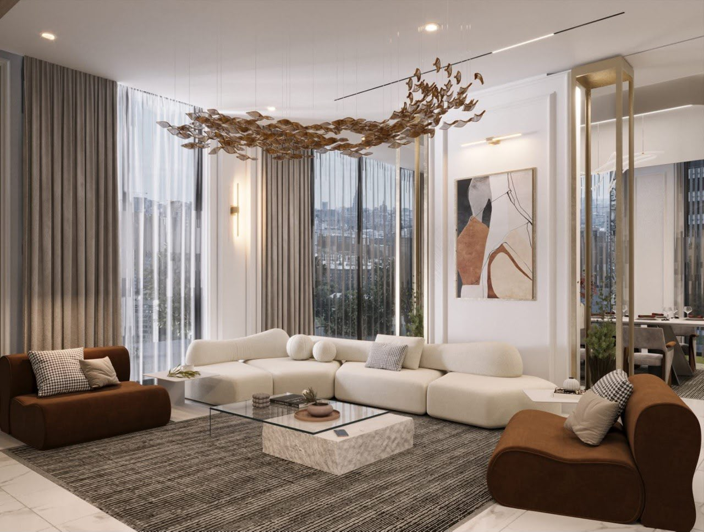
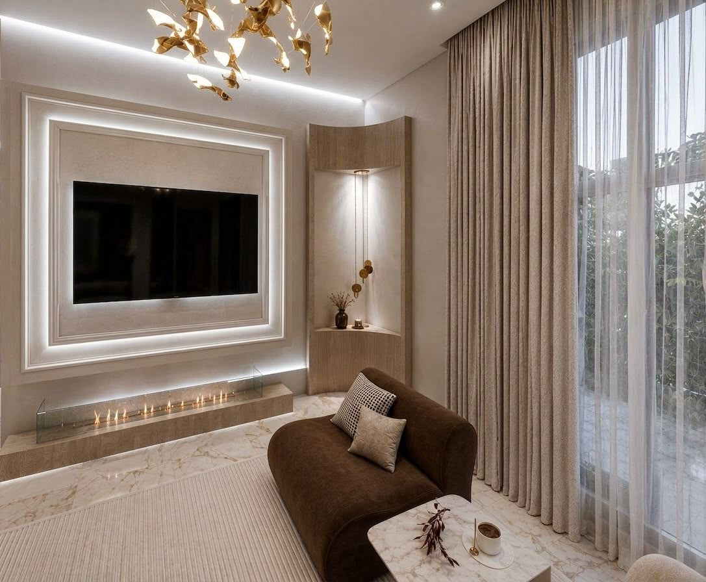
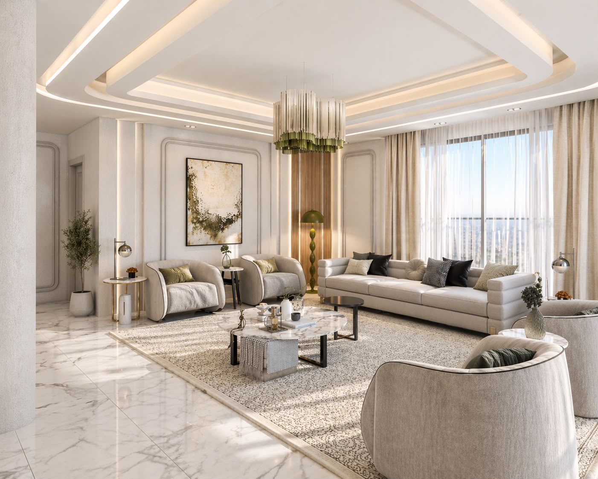
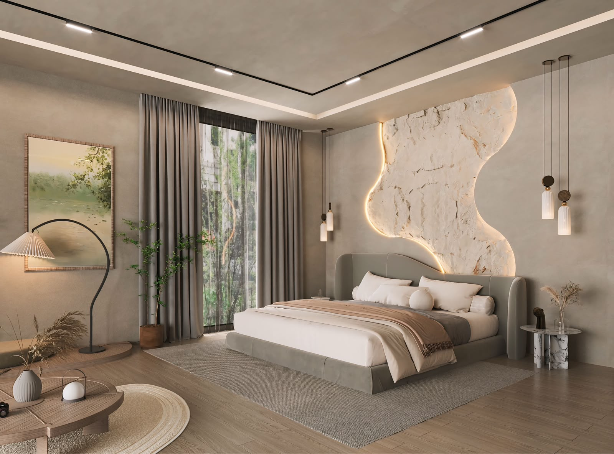
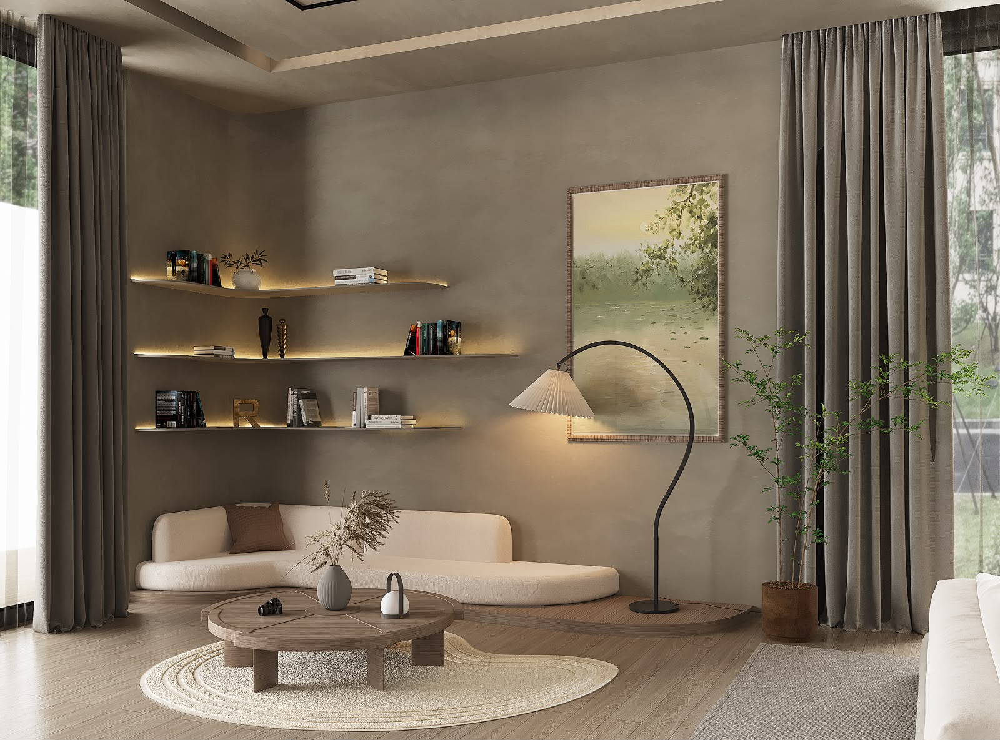
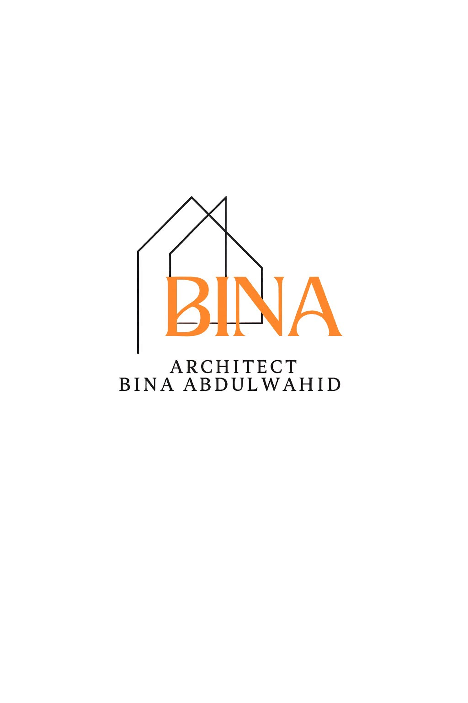

01 / 10↗ARCHITECTURAL DESIGN
ARCHITECTURE · DESIGN · INNOVATION
I am Bina Abdulwahid Said, an architectural designer with a Master's degree in Architectural Engineering. I believe in creating thoughtful spaces that balance beauty, functionality and timeless design.
Purposeful spaces
Ideas into reality
Master's degree
Beauty and function
SELECTED WORK
A collection of architectural ideas and design work. Each project reflects a different perspective on space, materials and atmosphere.

01 / 10↗ARCHITECTURAL DESIGN

02 / 10↗SPATIAL CONCEPT

03 / 10↗INTERIOR ARCHITECTURE

04 / 10↗DESIGN DEVELOPMENT

05 / 10↗ARCHITECTURAL CONCEPT

06 / 10↗RESIDENTIAL DESIGN

07 / 10↗SPACE PLANNING

08 / 10↗DESIGN EXPLORATION

09 / 10↗ARCHITECTURAL STUDY
Replace the example project titles with the actual project names and details.
WHAT I DO
A considered approach to architecture, from early concepts to spaces designed around people and purpose.
Developing architectural concepts that combine spatial quality, functionality and visual identity.
DISCUSS A PROJECT ↗Thoughtful interiors shaped by materials, lighting, atmosphere and everyday needs.
DISCUSS A PROJECT ↗Exploring practical layouts and spatial relationships to make spaces more effective.
DISCUSS A PROJECT ↗Transforming initial ideas into clear visual concepts that guide the design process.
DISCUSS A PROJECT ↗
ABOUT ME
Architecture is more than creating buildings. It is about shaping the way people experience space.
I am Bina Abdulwahid Said, an architectural designer with a Master's degree in Architectural Engineering. My academic background has shaped my interest in the relationship between design, functionality and the built environment.
Through each project, I aim to explore thoughtful solutions, balanced compositions and architectural ideas that respond to their context.
LET'S CONNECT ↗EDUCATION
Academic knowledge and creative thinking are essential parts of my approach to architectural design.
ACADEMIC QUALIFICATION
Advanced academic study in Architectural Engineering, supporting a considered approach to design, spatial planning and the built environment.
ADD UNIVERSITY NAME · GRADUATION YEAR
Great architecture is not only seen.
It is experienced.
GET IN TOUCH
Have a project in mind or want to discuss an architectural idea? Get in touch to start a conversation.